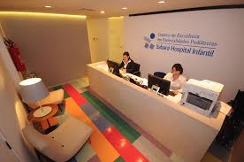

Objetivo:
O objetivo principal é desenvolver soluções para automação das áreas assistenciais e de apoio no Pronto Socorro do Sabará Hospital Infantil, visando melhorar a eficiência e a experiência tanto dos pacientes quanto dos acompanhantes.